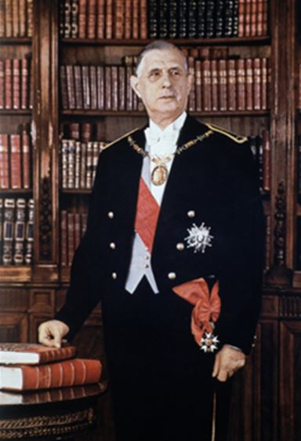
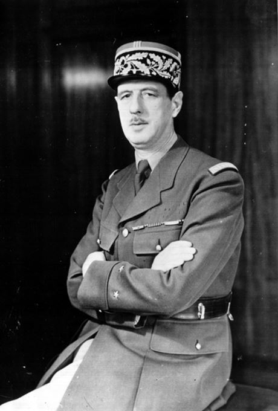
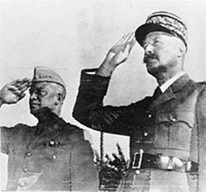
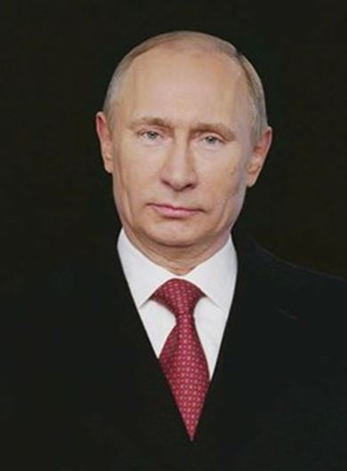

De quoi De Gaulle est-il aujourd’hui le nom ? Celui d’une occultation assourdissante.
Plus on commémore le grand homme – invoqué comme un mort illustre, enfoui sous les trémolos – plus on cherche à étouffer, sans y parvenir, la clameur du Politique. Nietzsche voyait dans l’« histoire monumentale » le résultat d’une double opération : signaler dans le passé des figures exemplaires ; édifier le peuple par l’exaltation de ce panthéon national. Mais dans un pays, le nôtre, qui pratique depuis quarante ans la repentance et l’autophobie, les monuments historiques subissent de méticuleuses démolitions contrôlées. Si De Gaulle est à peu près le seul à rester debout dans la période moderne, il ne faut pas s’y tromper : on ne l’épargne jamais que pour l’embaumer. La grande ombre historique, trop proche, est aussi trop dangereuse pour l’ordre établi dès qu’on retourne le regard vers qui la projette. On éloigne donc le Général dans le passé en le plaçant aux côtés de Jeanne d’Arc, Louis XIV et Napoléon.
Alors qu’il exprime plus violemment qu’eux les origines, réalités et horizons de la France contemporaine, on fait au mieux de lui une statue du Commandeur, au pire, et le plus souvent, une inoffensive autorité morale.
Quelques exemples. Prononcée pour remettre à leur place les anglo-saxons reprochant à la France sa guerre d’Algérie, la phrase de De Gaulle : « la grande querelle sur Terre, c’est la querelle de l’Homme », deviendrait aujourd’hui le titre possible d’un débat « humaniste » entre démocrates-chrétiens et francs-maçons. De même la réconciliation franco-allemande est-elle convoquée à l’envi par la droite européiste, à telle enseigne que le chef des Français libres finirait presque par apparaître, comble de l’énormité, comme un émule de Robert Schuman.
Et même quand on honore l’homme du 18 juin, c’est pour réduire son combat contre l’occupant à l’antifascisme sans fascistes des années 1980, théâtral selon Jospin lui-même. Pour preuve, on a vu Anne Hidalgo (Anne Hidalgo, quand même…) aller fleurir à Colombey la tombe d’un homme qui occupe l’exact antipode de son pauvre univers. C’est son droit, à l’incohérence.
Avec elle et ses semblables, l’époque voudrait rendre rassurant un acteur de l’histoire qui, entouré de haines, passant sous les balles, y a fait vaincre des principes terriblement clivants.
Côté gaulliste prétendu, la référence n’est pas moins usurpée. Ainsi Villepin mobilisait-il De Gaulle pour défendre en 2005 une constitution européiste dont le but était clair : enkyster plus profondément la France dans un organisme atlantiste dont le Général avait retardé l’avènement. Ainsi Fillon avance-t-il avec d’autres « gaullistes » la notion de « souveraineté partagée », contradictoire dans les termes. Ainsi encore Sarkozy avait-il placé sa campagne de 2007 sous le sceau gaullien pour faire réintégrer à la France, une fois élu, le commandement militaire de l’OTAN. Ainsi Juppé enfin, le pire d’entre eux tous, a-t-il couvert aux affaires étrangères la destruction de la Libye et, à travers elle, du nationalisme arabe soutenu par de Gaulle – se laissant au passage imposer, comme une serpillière, Bernard-Henri Lévy pour vice-ministre. Dans ce camp-là, plus généralement, les uns et les autres se livrent à des primaires bafouant l’esprit de la Ve république qui voudrait que l’élection présidentielle, substitut laïc du sacre de Reims, célèbre la rencontre d’un homme avec le peuple français. Cette atmosphère de pseudo-gaullisme n’est somme toute percée que par une lame claire, la déclaration, j’y reviendrai, sur « la France, peuple européen, de race blanche, de culture gréco-romaine et de religion chrétienne ». Reparue dans le débat public, elle y porte de nouveau une puissante, une nécessaire charge polémique.
Paradoxe savoureux, ses ennemis historiques sont désormais les meilleurs traducteurs de De Gaulle. Pétainistes qui lui reprochent d’avoir été, lui, le sauveur de la France, héritiers de l’OAS ne supportant pas qu’il les ait compris, royalistes ne lui pardonnant pas d’avoir restauré le principe monarchique sans mutiler la France de son bonaparto-républicanisme, atlantistes stay behind qui le détestent pour avoir secoué la tutelle américaine et mené une politique socialiste française – tous ceux-là sont au fond plus fidèles au De Gaulle réel que ses embaumeurs. Parce qu’ils prétendaient détenir le monopole du nationalisme ou, selon, du « national-occidentalisme », ils conservent rageusement la mémoire du politique machiavélien qui les a terrassés par la France. Et si déformé par la haine soit le portrait qu’ils dressent de lui, du moins savent-ils combien De Gaulle a soulevé de passions et de forces contraires, les leurs et celle de l’extrême-gauche, pour bâtir son œuvre nationale.
Ce n’est que la mauvaise foi qui empêche ces perdants de la grande histoire de France, résiduels, d’admettre que son corpus est aujourd’hui indispensable contre les vents dominants qui, depuis quarante ans, font sortir la France de l’histoire. En face de leur détestation d’arrière-garde, vit dans le peuple le puissant souvenir de l’époque encore récente où la nation, prospère et unitaire, grande et respectée, était conduite par un chef de dimension mondiale.
Cette nostalgie est parfaitement légitime. C’était non seulement mieux dans les années 1960 qu’aujourd’hui, mais ce qui reste de solidité française vient pour l’essentiel de la présidence De Gaulle. La mémoire vive du temps où la France, si elle n’était plus depuis Napoléon la première, demeurait une puissance souveraine, imprévisible pour ses alliés comme pour ses ennemis, cette mémoire est grosse d’une politique. Mais la peinture du géant d’hier reculé dans l’ombre avec, obscènes, les nains Sarkozy et Hollande sautillant à ses pieds en pleine lumière, atrocement descriptive de notre état, nous condamnerait à la dépression si nous n’y trouvions, par la répulsion, un puissant ressort moral.
Car le désespoir, en tout état de cause, nous est interdit. Parce qu’il serait une honte devant tout, les causes objectives d’abandon étant, quoi qu’on prétende, plus fortes en juin 1940 qu’à l’été 2017. Et parce que le pire, qui n’est jamais sûr, reste à venir : si nous gémissons maintenant sur les ruines françaises, que ferons-nous demain dans un pays exsangue où patrouilleraient les jeeps de Daesh ? Exemple moral contre l’esprit de renoncement, le gaullisme est aussi, surtout, une doctrine politique à deux articles : sauvegarde de l’identité et puissance par la souveraineté. Ces travaux d’Hercule sont plus que jamais à l’ordre du jour. Sous peine de mort.
Pour ressaisir cette pensée d’action, il faut dégager De Gaulle des incantations. Déboulonner la statue dans laquelle on l’enferme pour faire rejaillir, sur la terre remuée, l’athlète qui s’élance. Libérer l’énergie nucléaire que contiennent pour nous aujourd’hui ses actes majeurs. Cette tâche revient aux gaullistes « AOC ». Ni compagnons de la Libération, par génération, ni chiraquiens, par rigueur, ni sarkozystes, par décence, ils se recrutent parmi ceux, d’où qu’ils viennent, qui mesurent avec précision la magnitude gaullienne. Que ferait De Gaulle ? n’est pas la question qu’ils doivent se poser. Comment transposer le grand gisement en y triant, soustrayant et développant pour dominer le « vieil aujourd’hui »? Voilà leur affaire. Moderne et classique à la fois, la ressource gaulliste est infiniment plus opérante pour penser et agir dans notre temps que le national-libéralisme, le néotraditionisme ou l’impérialo-européisme où certains patriotes, aussi sincères qu’approximatifs, vont chercher leurs recours. Cette ressource est une tradition – au sens superbe de Gustav Mahler : « non la vénération des cendres, mais la passation du feu ».
LA MESURE DU TITAN
Au risque de paraître abrupt, j’irai vite sur l’homme du 18 juin. Sa trajectoire est au regard historique littéralement extraordinaire. Qu’un général deux étoiles parti de presque rien devienne un acteur mondial aux côtés de Churchill, Staline et Roosevelt, le fait, selon son propre mot, « sortir de toutes les séries ».
Mais la geste héroïque fut aussi rationnelle : ayant avec quelques autres la prescience du caractère inévitablement mondial de la guerre, De Gaulle a vu sur l’instant l’armistice comme une faute absolue. Connaissant aussi bien la dimension nationale de Pétain que ses limites personnelles, il savait que cet homme-là doublerait le désastre militaire d’un effondrement moral. Que la légitimité du Maréchal soutenant une collaboration inscrite dans l’armistice, la nation en serait empoisonnée dans sa profondeur. Qu’une reddition militaire sur le territoire métropolitain, qu’un gouvernement déplacé vers l’Empire, auraient été les moyens de préserver son âme maintenant avec sa liberté demain. A l’opposé de ces idées claires et nettes, la rhétorique de la « révolution nationale » était aussi involontairement comique que scabreuse. Elle plaçait en effet sous la bannière d’un « esprit de sacrifice » surmontant « l’esprit de jouissance » de l’entre-deux guerres une politique que, par ailleurs, elle justifiait par la volonté d’« atténuer » les souffrances des Français. Pour le dire brutalement : ni deux ans et demi de (relative) villégiature en zone libre, ni la (relative) correction des militaires allemands pendant la même période, achetés à l’Allemagne nazie à un taux spoliateur, ne valaient la corruption intime du pays par la collaboration.
Alors que les Néerlandais ou les Danois ont conservé de cette période, et malgré leurs collaborateurs, le sentiment de leur dignité nationale, nous payons encore 70 ans après, et malgré nos résistants, le prix d’une collusion organisée avec l’occupant qui, Patrick Buisson le montre dans son remarquable 1940-45 années érotiques, a compromis le peuple français jusque dans sa chair. Mais grâce à De Gaulle, l’extrême droite du même Buisson n’y pouvant rien, cette histoire-là ne fut pas toute l’histoire et le pays fut relevé, autant qu’humainement possible, dans les ordres réel et symbolique. C’est toute l’actualité tragique, pas déclamatoire, du 18 juin et de la France libre : l’esprit de collaboration souffle aujourd’hui dans les élites au moins aussi fort qu’en 1940-44 tandis qu’une part importante de la classe moyenne, dont les « Charlies » sont la pointe avancée, plierait vite si le vent mauvais soufflait plus fort encore. Démarquant l’axiome de Giono pour justifier son allégeance à un Euro-Califat « démocratique » : « Je préfère être un Allemand vivant qu’un Français mort », elle glisserait alors vers cette soumission post-pétainiste que Houellebecq, la décrivant avec son ricanement glacé d’épave talentueuse, place au titre de son dernier roman d’anticipation. La geste gaullienne est à cette enseigne un soleil moral, coupant, sous lequel il n’y a rien de nouveau que des hommes lâches ou courageux.
Mais l’héroïsme ne suffit pas. Que De Gaulle ait été assassiné ou que les Américains eussent réussi contre lui la manœuvre Giraud-AMGOT [1], et il serait resté dans l’histoire comme un chef de guerre alors qu’il fut aussi, surtout, un politique, comme un libérateur alors qu’il fut plus encore un fondateur. Alexandre le Grand, qui n’a laissé derrière lui que d’épiques ruines, possédait la celeritas : « Le geste de son bras n’est pas symbole de protection, mais invitation au départ, signal de l’aventure [2]. » Washington était un général intellectuellement frustre entouré de grands penseurs du droit et de l’État.
Oscillant entre l’héritage européen et la recherche d’une voie propre à l’Amérique latine, Bolivar a laissé une inspiration plus qu’une doctrine. Michael Collins a conquis l’indépendance de l’Irlande sans avoir le temps de la bâtir et de jeter sur son sol, comme Bonaparte consul avec le Conseil d’État et le Code civil, « quelques masses de granit ». De Gaulle, lui, répond pleinement à l’avertissement de Tocqueville : « Ce n’est pas la force seule qui assoie un gouvernement nouveau ; ce sont de bonnes lois. Après le combattant, le législateur. L’un a détruit, l’autre fonde [3]. » Déployant une pensée complète de l’État, du social, de l’économie et de la géostratégie, trempée dans l’histoire de France, c’est le De Gaulle nomothète, chef du gouvernement provisoire et fondateur de la Ve république, qui fournit aux nationaux leurs plus solides appuis.
INSTITUTION DE L’ÉTAT, ÉTAT DES INSTITUTIONS
Commençant par le commencement, c’est-à-dire les institutions, De Gaulle refait l’État en 1944 puis, surtout, en 1958. « Franco-romain », il établit naturellement le primat de la puissance publique sur la société quand les anglo-saxons font émaner la première de la seconde ; monarcho-républicain, il assoie contre le parlementarisme la prééminence de l’exécutif sur le législatif en installant au sommet de l’État « une tête directement mandatée par l’ensemble de la nation et mise à même de vouloir, de décider et d’agir ». Il a suivi ce plan simple sans obéir entièrement au précepte de Bonaparte d’après lequel « une constitution doit être courte et obscure pour ne pas gêner l’action du gouvernement ». Courte mais claire, celle de 1958 libère l’action de l’exécutif en répartissant, avec précision, les pouvoirs autour de lui.
Où en sommes-nous aujourd’hui ? Notre situation est paradoxale. L’autorité de l’État n’est pas minée par un parlementarisme résurgent mais – et c’est pitié – par la pratique de l’exécutif lui-même. Alors que la constitution gaullienne faisait en principe relever du règlement tout ce qui n’était pas expressément attribué à la loi, les gouvernements inversent depuis trois décennies l’ordre du principe et de l’attribution. C’est-à-dire qu’ils confectionnent, le parlement étant leur chambre d’enregistrement, des lois pour tout et, de fait, pour n’importe quoi. Ni le voile intégral, ni le burkini, par exemple, ne devrait être prohibés par une loi mais, au principe, par un règlement administratif. L’enjeu n’est pas seulement de compétence mais d’autorité : sous le règne du « droit bavard », l’État affaiblit la sienne comme si l’esprit du parlementarisme lui était, littéralement, monté à la tête. Une telle inflation législative, décrets et règlements compris, porte avec elle plusieurs conséquences fâcheuses : complexité excessive de l’édifice légal, insécurité juridique liée à la sur-politisation des textes, contestations endémiques procédant de l’une et de l’autre, le tout épuisant les entrepreneurs, les administrations et décourageant les investisseurs étrangers.
La constitution elle-même est affectée par cette involution. De Gaulle ne voulait pas que l’État fut un théâtre d’expression pour « idéologies inconsistantes ». Or la constitution leur sert aujourd’hui de dépotoir puisqu’on y introduit des dispositions – écologistes, féministes, européistes – qui n’ont rien à y faire, souvent des lois qu’on a craint de voir censurées par le parlement. C’est ainsi qu’on a procédé pour la parité qui violait trop manifestement le droit de suffrage. Quant au droit libéral-européiste, il pénètre le socle de la république française par l’article 88-1 constitutionnalisant « la participation de la France à l’Union Européenne ». Placé sous cette hypothèque, le conseil s’épuise à défendre le texte fondamental, par le biais de la Question Prioritaire de Constitutionnalité (QPC), contre la concurrence que lui imposent les normes européennes.
Il s’épuise pour le bien mais nuit aussi, du fait de sa composition, à l’esprit de la première des lois. Alors qu’il est désormais une sorte de cour suprême qui devrait assurer au peuple souverain que son représentant, le parlement, et son exécutant, le gouvernement, respectent sa volonté constituée, ses membres – anciens présidents de droit, ministres, députés nommés par l’exécutif, tous liés à des lois qu’ils ont eux-mêmes rédigées – sont animés par des polarités idéologiques de court terme. Ils ne censurent pas les lois qui le mériteraient et censurent, plus rarement, celles qui ne devraient pas l’être.
Que faire ? La VIe république imaginée par Mélenchon et Montebourg promet un retour vers le futur de la IVe. Il faut plus sérieusement refondre la Ve république « de bronze » voulue par De Gaulle. C’est-à-dire réaffirmer le droit supérieur de l’État contre un État de droit sans consistance ni autorité, en se souvenant avec Carl Schmitt que l’existence du premier conditionne celle du second, et les libertés publiques celle des droits individuels. Quelques mesures y pourvoiraient : rétablir l’État dans sa prérogative en reversant dans le règlement tout ce qui ne concerne pas la loi ; alléger la constitution de ses alluvions récentes ; supprimer l’article 88-1, et se dispenser de la QPC en quittant l’Union ; modifier la composition du conseil constitutionnel dont les membres, à partir d’un premier collège nommé par un gouvernement national, seraient installés à vie par cooptation, selon le seul critère de la compétence publique ; rétablir en haut le septennat pour que le président cesse de disparaître comme Chirac derrière le gouvernement ou, comme Sarkozy et Hollande, de se confondre avec lui ; approfondir à la base l’empreinte référendaire de la Ve république à travers un véritable référendum d’initiative populaire inspiré de la Suisse qui permet au peuple de se saisir d’un enjeu que le législateur esquive ou, plus violemment encore, de bloquer l’adoption parlementaire d’une loi pour s’en emparer lui-même – la question du quorum pertinent demeurant à résoudre.
Toutes ces mesures, bien sûr, resteront des vœux pieux sans une transformation gaullienne de la sociologie et même, plus profondément, de l’anthropologie des élites. L’événement, ici, fera loi. Aucun texte ne fera revenir les partis sur la désastreuse pratique des primaires sans des vagues brutales qui balayeront les médiocres, les notables, les gamelleurs. Si les institutions peuvent parfois limiter cette médiocrité, elles souffrent en retour, et plus fatalement, d’être mal habitées. C’est du fond de mœurs nationales revivifiées par les événements, c’est depuis ce que Montesquieu appelait « l’esprit général d’une nation », c’est peut-être, hélas, par la guerre, impitoyable sélectrice, que de véritables élites nationales réémergeront. Mais donc ici le politique dépend de l’histoire qui, de nature, est redoutablement imprévisible.
BODIN, RICHELIEU, DE GAULLE : LE PARTI DES POLITIQUES
Bodin a forgé la doctrine de l’État souverain, Richelieu lui a donné sa praxis, De Gaulle son extension moderne. Avec une même philosophie reposant sur le primat du politique sur les marchands et les prêtres, de l’État sur l’économique et le religieux. Or la puissance publique est asservie à ces deux forces, auxquelles se coagulent aujourd’hui des intérêts communautaires nés de l’immigration extra-européenne de masse. – Entretenue par la trahison d’élites françaises ayant perdu tout centre de gravité historique, cette immigration morcelle le corps national. Celui-ci, qui supportait naguère l’État, au double sens du terme, en est désormais séparé par une incertitude mortelle : qui sert-il ? Or la réalité du « multiculturolibéralisme » contredit si violemment son discours que, par un mouvement de balancier, le politique resurgit dans cette question. Et c’est par la crise identitaire, dont les attentats ne sont que la pointe sanglante, qu’il reparaît comme insoluble dans l’économie, le juridique et le social.
C’est sur deux fronts qu’un nouveau parti des politiques, encore diffus, mène le combat, celui de l’État, celui du peuple. Il ressaisit au sein du peuple, dont l’État ne peut mépriser le sentiment que jusqu’à un certain point, un ethos civico-national. Il n’y a ici pour l’instant rien à attendre des « Charlies », qui n’éprouvent devant la violence de l’histoire qu’une peur privée. On observe en revanche dans de larges couches populaires et moyennes une lucidité nouvelle devant le choc des civilisations à domicile et, moins clairement perçue toutefois, devant une mondialisation qui déracine et appauvrit. L’expérience de la précarité et du danger rebranche les individus sur la totalité nationale, les disposant à renouer avec ce que Hegel appelait la « vie éthique ». Patriotique, ce mode d’être doit venir inquiéter, avant bientôt de l’investir, un État français qui agit contre sa propre substance populaire.
Car ce patriotisme resurgi n’atteindra sa pleine effectivité que s’il pénètre en retour, par une victoire politique que rien ne garantit, le corps de l’État. Faute de quoi il restera un réflexe de sauvegarde aussi légitime et nécessaire qu’insuffisant. Un État de nouveau national reforgerait l’esprit public contre le mondialisme et l’islamisme. Par l’école, et le chantier est immense ; par l’armée, sans militarisation « nippo-impériale », mais en replaçant l’esprit des armes au cœur de la cité. Il y a sur ce dernier point un paradoxe gaullien à surmonter dialectiquement : ayant fait rentrer l’armée dans le rang au moment de la guerre d’Algérie, De Gaulle incarnait aussi – Général, président chef des armées – le militaire dans le politique. Mais dans les deux cas, école et armée, pas d’illusions : l’assimilation des extra-européens, particulièrement musulmans, sera marginale. On aura du moins fait quelque chose si on replace les Français, par le roman national et une éthique du combat, dans l’axe de leur civilisation et le sens de sa mortalité.
Cette civilisation nationale est composite. De Gaulle en possédait la généalogie, sachant que le catholicisme, c’est la France, mais que la France, ce n’est pas seulement le catholicisme mais aussi, sans exhaustivité, l’humanisme renaissant, le cartésianisme, la république nationale. Il faut au passage lever la confusion entretenue par Patrick Buisson dans son dernier ouvrage : la défense du catholicisme passe par la France plus que l’inverse. Si les vertus théologales, l’espérance éminemment, peuvent irriguer les combats temporels, elles ne sauraient se substituer aux vertus politiques sans diminuer leur force. En termes plus brutaux, il ne suffit jamais, dans le monde temporel, d’être chrétien pour que vive la liberté chrétienne. Il faut être Grec, Romain, Français, et parfois en armes. Que chacun s’en souvienne.
De manière plus générale, aucune civilisation n’a jamais été défendue comme un seul homme par elle-même mais par des corps particuliers, les nations, qui en sont la réalité existentielle. C’est parce que l’Europe prétend s’unifier politiquement qu’elle cède sur tout, identité, indépendance, composition démographique ; et c’est par des réactions nationales, venues de Hongrie et du Danemark que le flux migratoire par exemple, sans tarir, ne passe pas partout. La civilisation européenne ne fera jamais une politique. On se souvient de la formule de De Gaulle sur Chateaubriand, Goethe et Shakespeare qui ont servi cette civilisation en étant intensément Français, Allemand et anglais, pas en écrivant dans quelque « Volapük intégré ». C’est dans le même esprit que le nouveau parti des politiques, exclusivement consacré à la nation française, préserverait en même temps une part de la culture européenne.
ÉCONOMIE POLITIQUE : BISMARCK, DE GAULLE, POUTINE
Les archi-gaullistes doivent enfin affronter la nouvelle configuration du capitalisme – mondiale, prédatrice et nihiliste. On a parlé naguère à propos du dirigisme gaulliste, et de quelques autres expériences proches, de « troisième voie » entre le libéralisme et le collectivisme. Aujourd’hui que le second est mort, que l’ultra-libéralisme règne largement dans le monde, en France sous sa formule sociale-libérale, cette troisième voie est devenue la deuxième. Les pseudo-gaullistes brandissent parfois telle formule de De Gaulle : « En économie, non plus qu’en politique ou en stratégie, il n’existe, à mon sens, de vérité absolue. Mais il y a les circonstances. » – manière pour eux de dissoudre les principes dans un pragmatisme de reniement. Si souple fut-il tactiquement, De Gaulle plaçait en réalité son économie politique sous une philosophie néo-colbertiste édifiée sur trois fondements.
Le refus d’abord que la propriété privée, qu’il ne s’agit pas d’abolir, devienne une puissance supérieure à celle de l’État – le refus, autrement dit, que Fouquet en remontre au Roi. A ceux qui ricanent à l’évocation du Plan, on peut rétorquer que le dirigisme est pratiqué aujourd’hui, mais au service exclusif des grands oligopoles mondialisés qui (faut-il l’apprendre à quiconque ?) ne comprennent que la force. Dans House of cards, série hyperbolique portée par l’excellent Kevin Spacey, celui-ci, président des États-Unis, réplique à un pétro-oligarque méprisant qui le menace de détruire des milliers d’emplois en vingt minutes : « N’oubliez pas que je suis le type avec les types avec des fusils ». Rien de fictif ici, ni d’obsolète.
De Gaulle a domestiqué le grand capital dans les années 1960, Poutine dans les années 2000. Pour ceux qui croiraient devoir craindre la référence à l’heure où le taux d’imprégnation atlantiste des élites est radioactif, c’est en l’espèce Poutine qui, s’appuyant sur une constitution inspirée de la Ve république, est gaulliste. Autour d’un exécutif fort, il a constitué une korpokratura. La notion conjugue l’intégration par l’État de la puissance économique, la subordination étroite des intérêts capitalistiques aux politiques nationales et, obtenue de gré ou de force, la loyauté des grands groupes industriels et commerciaux. Cette « corpocratie d’État » intègre le grand capital en lui retirant le sentiment de son indépendance. A travers des prises de participations majoritaires et des grands consortiums publics s’affirme donc un dirigisme d’inspiration gaulliste qui porte sans doute, dans le contexte d’une mondialisation devenue folle, une formule d’avenir.
Le gaullisme veut parallèlement que l’État impose à la société, dans sa dimension économique, un principe de décence « rousseauisto-bismarckien ». Contre le mépris de classe qui animait Voltaire, Rousseau plaidait : « quant à la richesse, que nul citoyen ne soit assez opulent pour en pouvoir acheter un autre, et nul assez pauvre pour être contraint de se vendre » Un siècle plus tard, le Genevois reçoit un écho inattendu chez Bismarck : « Pourquoi l’invalide de guerre et le fonctionnaire atteint par l’âge devraient-ils avoir une retraite, et pas le soldat du travail ? Cette obligation s’imposera. L’avenir lui appartient. Il se peut que ma politique s’effondre après ma mort. Mais le socialisme d’État restera. (…) Voilà l’idée : un socialisme d’État ! La collectivité doit prendre en charge l’assistance aux plus défavorisés » [4]. Sans la contrainte publique, premier principe du gaullisme, nulle solidarité ne peut s’installer dans la durée. C’est le sens de la sécurité sociale et de la retraite par répartition qui ont entretenu jusque dans les années 1980 la common decency orwellienne, brillamment associée par Jean-Claude Michéa à la pensée socialiste française pré-marxiste. Et somme toute, le gaullisme, c’est Proudhon plus l’État.
Qu’on ne s’y trompe pas : au refus du darwinisme social s’articule enfin, troisième principe, celui de l’assistanat. Front des producteurs contre les prédateurs d’en haut, le gaullisme économique, tout entier tourné vers le travail, ne saurait dévoyer la solidarité dans une myriade d’aides qui, grevant les comptes publics, ne servent qu’à acheter une paix dite sociale (pour ne pas la nommer ethnique). Ni la sécurité sociale, ni les allocations familiales ne sont, ou ne devraient être, des revenus de substitution, mais des instruments servant une politique nationale complète – identité comprise. Or, les gouvernements sociaux-libéraux successifs refusent de toucher aux mannes qui font de la France une chance pour l’immigration, en même temps qu’ils asphyxient, aux plans fiscal et administratif, les petits entrepreneurs comme ils ne l’ont jamais été dans les années 1960. Toutefois, pour reprendre ce que De Gaulle appelait une grande « politique des revenus », il faut réinventer le gaullisme. Je suis en effet sceptique sur la participation, intuition échouée du Général. L’association capital-travail supposerait en effet une immanence des intérêts qui n’est concevable, et encore, que dans les petites unités. Plutôt que d’« assouplir » le droit du travail, il faut simplifier l’administration, relancer la croissance en retrouvant la souveraineté monétaire, défiscaliser les primes et les heures supplémentaires, imposer aux grands groupes un pourcentage de reversion à leurs salariés selon les bénéfices enregistrés – bref, œuvrer, en tous domaines, contre le social-libéralisme qui émancipe les grands intérêts en écrasant les petits.
LE MONDE TOUS AZIMUTS
Les forces qui veulent façonner l’opinion ont depuis vingt ans diffusé sans relâche l’idée intimidante que les mastodontes territoriaux, militaires et démographiques, écrasant les « petites » nations, seraient désormais les seuls candidats éligibles à la puissance. Or celle-ci naît toujours d’une composition de facteurs articulés entre eux par une volonté humaine qui cherche à en tirer l’optimum. C’est une conception naïve ou idéologique qui fait dépendre la puissance de forces réputées objectives, lesquelles, faute d’une volonté clairvoyante pour les agencer, se transforment bientôt en faiblesses. L’expansion territoriale romaine par exemple, d’abord source de puissance, deviendra cause de dissolution à mesure que les élites impériales perdront maîtrise et cohérence. Aujourd’hui la démographie est un facteur ambivalent, enjeu vital en Russie, sévèrement contrôlé en Chine, sous leurs paramètres respectifs. Ainsi l’équation entre puissance et volume n’est-elle pas une loi d’airain. La France, cinquième économie mondiale, siégeant au Conseil de sécurité de l’ONU, se paye à la vérité un luxe parfaitement obscène en dissertant sur son incapacité à « peser seule » et la nécessité de « l’Europe, l’Europe, l’Europe »… Appréciés du Pérou, du Liberia ou d’Indonésie, si toutefois ils y parviennent, ces raisonnements doivent paraître mensongers, décadents ou ridicules. A rebours de cette attitude, la Russie a retrouvé le chemin de la puissance en renversant les dogmes du libre-échange et de l’intégration internationale auxquels elle avait rendu, dans les années 1990, un culte à perte.
De Gaulle se faisant « une certaine idée de la France » savait bien qu’elle n’était pas une pure idée, que l’existence précède toujours l’essence, que la grandeur plonge ses racines dans la terre. Quand il faisait entendre une voix universelle, c’était donc depuis l’intérêt national français. Westphalien, réaliste, pragmatique sur la scène internationale, il projetait la France sur toutes les latitudes. De Gaulle c’était hier, et le monde a changé depuis mais, pensé dans le temps long, il ne s’est pas métamorphosé. La France y occupe toujours une place mondiale, avec les mêmes acteurs redistribués. Mais lui manque une grande politique internationale. Par défaut et par excès de pragmatisme à la fois, ses dirigeants la font participer aux croisades américaines et mènent des politiques à courtes vues vite sanctionnées par leurs conséquences – la sordide affaire libyenne conjuguant les deux tares. Ils ne veulent pas voir que la mondialisation, au lieu de les atténuer, accentue les égoïsmes nationaux, qu’il n’y a jamais de « règlement mondial des problèmes mondiaux », que l’un des mensonges de l’idéologie mondialiste, c’est de prétendre que l’avenir est aux grands ensembles régionaux. Ils ne veulent pas voir que la France, qu’elle le veuille ou non, est seule.
Bismarck refusant alors l’aventure coloniale eut cette formule : « Ma carte de l’Afrique, c’est l’Europe ». Une géostratégie gaullienne la démarquerait en l’inversant : « La carte de l’Europe, pour la France, c’est le monde ». Elle contournerait donc l’euratlantisme par un rapprochement, sans alliance intégrée, avec la Russie qui, seule parmi les BRICS, conduit face aux États-Unis une diplomatie mondiale. Elle se dégagerait simultanément de l’Otan et, coudées franches, mènerait politique multipolaire tous azimuts en s’appuyant sur son espace maritime, deuxième mondial. Elle s’appuierait enfin sur son héritage pour pratiquer un réalisme du temps long en ravivant son aura dans le monde par la culture, l’intelligence économique, ses relais francophones, son génie juridico-institutionnel, son savoir-faire militaire.
L’IDENTITÉ DE LA FRANCE
J’ai évoqué en commençant la fameuse citation gaullienne sur la France et sa diversité interne. La voici dans sa version intégrale : « C’est très bien qu’il y ait des Français jaunes, des Français noirs, des Français bruns. Ils montrent que la France est ouverte à toutes les races et qu’elle a une vocation universelle. Mais à condition qu’ils restent une petite minorité. Sinon, la France ne serait plus la France. Nous sommes quand même avant tout un peuple européen de race blanche, de culture grecque et latine et de religion chrétienne. Qu’on ne se raconte pas d’histoires ! Les musulmans, vous êtes allés les voir ? Vous les avez regardés avec leurs turbans et leurs djellabas ? Vous voyez bien que ce ne sont pas des Français ! Ceux qui prônent l’intégration ont une cervelle de colibri, même s’ils sont très savants. Essayez d’intégrer de l’huile et du vinaigre. Agitez la bouteille. Au bout d’un moment, ils se sépareront de nouveau. Les Arabes sont des Arabes, les Français sont des Français. Vous croyez que le corps français peut absorber dix millions de musulmans, qui demain seront vingt millions et après-demain quarante ? Si nous faisions l’intégration, si tous les Arabes et Berbères d’Algérie étaient considérés comme Français, comment les empêcherait-on de venir s’installer en métropole, alors que le niveau de vie y est tellement plus élevé ? Mon village ne s’appellerait plus Colombey-les-Deux-Églises, mais Colombey-les-Deux-Mosquées ! »
Qu’y ajouter ? Historiquement, culturellement, anthropologiquement définitif, le constat possède encore plus de force aujourd’hui, après quarante ans de mélange d’huile et de vinaigre, qu’au moment où il fut prononcé. Tout, absolument tout le valide, du quotidien au Bataclan. Seuls désormais les naïfs, les débiles ou les menteurs croient encore que la nationalité administrative, procédant du droit du sol, équivaut appartenance française. On convoque parfois pour soutenir cette nationalité contractuelle le fameux « plébiscite de chaque jour » d’Ernest Renan, en omettant de rappeler qu’il le liait à un « legs de souvenirs ». Et qu’il avait ouvert sa célèbre conférence Qu’est-ce qu’une nation ? par un péremptoire : « L’homme, messieurs, ne s’improvise pas », qui vaut aussi pour cet homme collectif qu’est un pays. Or ce sont de fait des peuples entiers qui sont entrés depuis quarante ans d’Afrique en France, bouleversant sa composition ethno-culturelle. L’immigration extra-européenne de masse n’a rien d’un phénomène naturel. Certains la font remonter aux accords d’Evian. A tort, car il ne s’agissait alors que de visas provisoires délivrés, avant retour au bled, à une immigration de travail masculine. Non, c’est le regroupement familial giscardo-chiraquien de 1976 qui a déclenché la déferlante. On sait depuis Descartes que « l’âme n’est pas dans le corps comme un pilote en son navire ». Mais s’il est déjà difficile de maîtriser les passions et les affects de sa propre chair, c’est impossible quand ce corps, par membres entiers, cesse de vous appartenir. Bref, le Général est validé !
George-Marc Benamou, une des figures les plus répugnantes du politiquement correct francophobe, a raison avec ses semblables quand il accuse, s’appuyant sur la citation ci-dessus, De Gaulle d’être raciste. Si l’on précise qu’il l’est selon les canons de l’antiracisme « années 1980 » – autrement dit, qu’il ne l’est pas. Nous nous trouvons en revanche dans la situation qu’il voulait prévenir – en danger de mort par balkanisation, lente ou rapide. Qu’y faire ? Supprimer, définitivement et sans retour, le regroupement familial, le droit du sol, les aides parasitaires, créer autour de ces mesures un climat remigratoire, placer chacun devant une France non négociable dans ses lois et, surtout, ses mœurs. En tout état de cause, il n’y aura pas de gel communautaire sous quelque compromis du « haïr-ensemble ». La France ne dispose pas en effet de l’« insularité » ni de la religiosité patriotique américaines, ni des ressources territoriales et du logiciel impérial de la Russie. L’alternative, c’est la France unitaire ou une guerre civile extérieure. C’en est le second membre qui, à l’heure présente, paraît tenir la corde. Mais le pire, donc, n’est jamais sûr.
DE GAULLE, QUELLE LATITUDE ?
Où vit aujourd’hui le gaullisme « AOC » fait d’indépendance nationale, de justice sociale et d’affirmation identitaire ? Dans le peuple, il est un poumon puissant. Mais seuls, majoritaires encore, et seuls légitimes, les Français maintenus cherchent désespérément leur élite. Le gaullisme, autrement dit, doit trouver ses hommes et ses hommes conquérir le pouvoir. Ils n’y parviendront pas sans créer ou, de manière plus réaliste, sans investir un mouvement politique en état de le faire.
Qu’on décèle des éléments « gaulloïsants » chez Mélenchon, et il s’en trouve, qu’on juge vertueuse la trajectoire de Dupont-Aignan, intéressant surtout par son électorat, qu’on relève des personnalités authentiquement gaullistes chez les Républicains, comme Jacques Myard, ne change rien au fond de l’affaire. Sauf bouleversement radical du paysage politique par les secousses de l’histoire, que je redoute comme père autant que je les souhaite comme patriote, c’est aujourd’hui le Front national qui exprime par la force des choses, et comme malgré lui, les grands axes du gaullisme. S’il se mettait enfin à travailler sérieusement, il verrait que De Gaulle est à son ordre du jour – pas pour solder jusqu’à la fin des temps son passé d’extrême-droite, périmé par les tectonique des plaques, mais pour empoigner vigoureusement l’avenir. Il arrêterait alors peut-être d’opposer l’identité et la souveraineté dans un débat que ses protagonistes rendent, par limitation narcissique, totalement stérile. Et il se convaincrait que la souveraineté sans identité, portée par son aile gauche présomptueusement abstraite, est vide, tandis que l’identité sans souveraineté, imaginée par son aile droite concrètement bornée, est impuissante. Il revient à son chef d’opérer cette grande jonction – maintenant, de toute urgence.
Si ce n’est lui, le tronçon du glaive français sera ramassé tôt ou tard, mais peut-être trop tard, par une autre escouade nationale. Quoi qu’il en sera, plût à la république, à la nation, à la France éternelle que l’héritage de De Gaulle soit continué par des hommes capables de toute la vertu politique, virile et magnanime, dont le volcan de Colombey, d’où l’on est regardé avant d’y être vu, nous donne pour demain l’exemple absolu.
Y.J.
[1] Le falot Général Giraud a été propulsé par Roosevelt à Alger en 1943 pour supplanter De Gaulle. Échec. Allied Military Government in Occupied Territory, « gouvernement militaire allié en territoire occupé » : mis en place en Italie, c’était le statut de sujet que les Américains avaient prévu pour la France. Échec.
[2] Raoul Girardet, Mythes et mythologies politiques, op. cit., ch.2, « Le Sauveur », Seuil, 1986, p. 75.
[3] De la démocratie en Amérique, Gallimard, 1961, « Avertissement à la douzième édition », p. 34.
Partager cette page